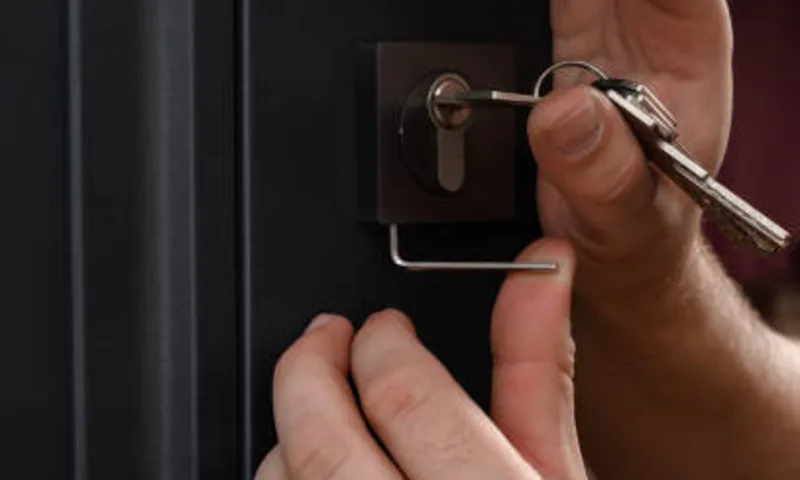
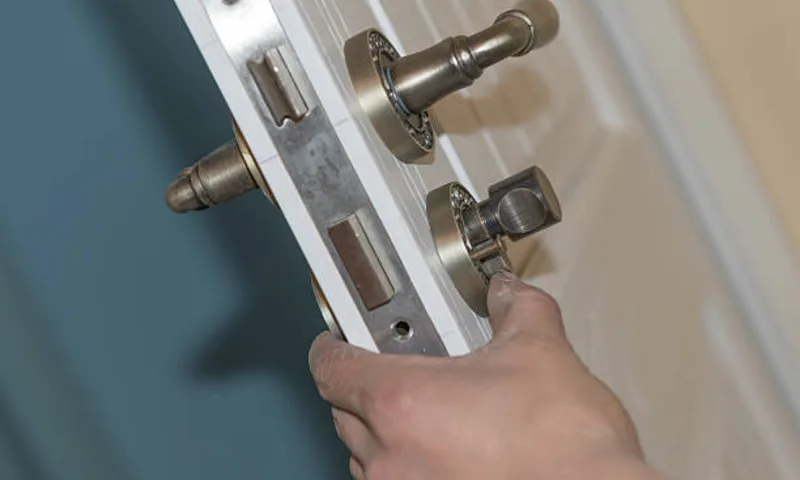
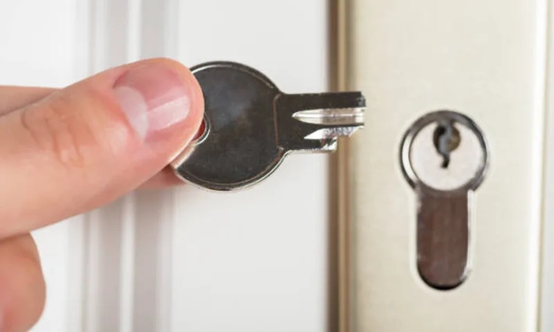

Не открывается входная дверь
При заклинивании замка мастер быстро оценивает ситуацию и открывает дверь с минимальным вмешательством в конструкцию.
Если нужен срочный выезд специалиста по вскрытию, оформите заявку по телефону или через форму. Мастер уточнит тип двери и предложит оптимальный сценарий работ.

При заклинивании замка мастер быстро оценивает ситуацию и открывает дверь с минимальным вмешательством в конструкцию.
Извлекаем обломок, выполняем вскрытие и при необходимости сразу меняем цилиндр для безопасной дальнейшей эксплуатации.
Выезжаем по районам Санкт-Петербурга без долгого ожидания и согласовываем стоимость услуги до начала работ.
| Услуга | Работа | Дополнительно | Итого |
|---|---|---|---|
| Выезд и вскрытие стандартного замка | от 1 500 ₽ | от 500 ₽ | от 2 000 ₽ |
| Вскрытие замка с повышенной защитой | от 2 000 ₽ | от 700 ₽ | от 2 700 ₽ |
| Срочный вызов с вечерним выездом | от 2 500 ₽ | от 1 000 ₽ | от 3 500 ₽ |
Итоговая стоимость зависит от типа механизма, состояния двери и срочности вызова. Финальную сумму согласовываем до начала работ.
После заявки оператор направил ближайшего мастера, который выполнил вскрытие и восстановил доступ в помещение.

02Мастер вскрыл дверь, оценил состояние механизма и предложил оптимальное решение по ремонту без повторного выезда.

03После вскрытия мастер заменил цилиндр и проверил работу нового комплекта ключей на месте.
Позвоните по номеру на сайте или оставьте форму. Мы уточним адрес и отправим ближайшего мастера.
Да, работаем с входными и межкомнатными дверями, подбирая подходящий способ вскрытия под конкретный механизм.
Да, если потребуется, мастер установит новый механизм в рамках одного выезда.
Вызвать мастера по вскрытию замков стоит, когда дверь заблокирована и требуется быстрый доступ в помещение. При обращении заранее уточняем тип замка и сценарий работ, чтобы сократить время на месте.
Мастер выезжает с комплектом инструмента для разных типов механизмов, действует аккуратно и согласовывает стоимость заранее. Это позволяет решить задачу без затяжек и непредвиденных расходов.
Если после открытия потребуется замена механизма, можно сразу перейти к услуге мастер по замене дверных замков или выбрать профильную страницу в разделе услуги.